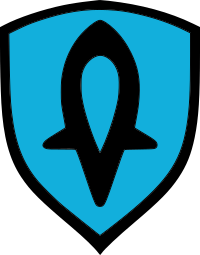
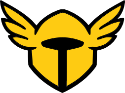
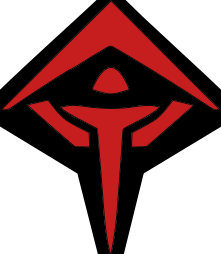
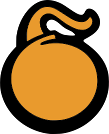
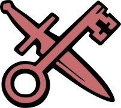
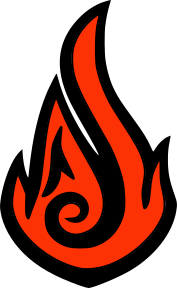
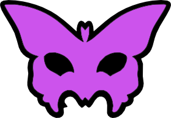
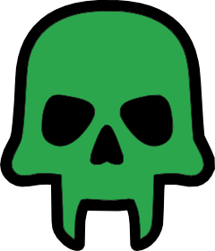

One multi-guild Discord bot for builds, squad comps, WvW matchups, patch notes, streaming alerts and automatic guild-roles — synced and beamed straight to your server, lit up in your professions' colors.








Each feature posts a rich, profession-themed embed straight to Discord. Every server's data stays fully isolated.
Store and share GW2 builds with profession colors, icons, chat codes and forum threads.
Schedule recurring squad signups with live dropdown rosters and per-profession headcounts.
Track your guild's matchup and get pinged when your server relinks.
Always know exactly when the next weekly WvW reset hits.
Auto-assign Discord roles from real GW2 in-game guild membership via API keys.
Patch notes and any RSS/Atom feed posted automatically as they drop.
Go-live notifications for your guild's YouTube and Twitch creators.
Members securely link GW2 API keys; guild lookups by name in seconds.
Log joins, leaves, kicks, bans, edits and role/channel changes to a channel you choose.
Auto-post when a new ArcDPS build drops, with release time and a download link.
One setup flow, role-gated, with every server's settings stored separately.
Every build is stored with its profession or elite spec, build-site links, chat code, description and audit trail of who changed it last. Posts adopt the profession's color and icon automatically.
Set a roster of classes, save reusable presets, then attach them to recurring post times in any timezone. When a schedule fires, AxiTools posts the signup and members pick a class from the dropdown — no extra permissions needed.
/comp manage — channel, ping role, classes & presets/comp schedule — recurring days/times per presetAmerica/Los_Angeles) or shorthand (PST)Track your guild's WvW world, see the full matchup roster, and never miss a relink or a reset.
Point AxiTools at the alliance guild you want to follow and a channel to post in. It posts the current matchup — your home world, team color, tier and the GREEN / BLUE / RED rosters — and announces when your server's links change.
Patch notes, feeds and go-lives land in the right channel the moment they happen.
Subscribe a channel to the official Guild Wars 2 wiki game-updates page, any RSS or Atom feed, and the ArcDPS build watcher. AxiTools polls each on its own schedule and posts new entries the moment they drop — never reposting old ones.
Subscribe to your guild's YouTube channels and Twitch streamers. When they go live, AxiTools drops an alert with the title and a ping for the role you choose.
Map a Guild Wars 2 guild ID to a Discord role. When members link their API key, AxiTools grants the role to verified guild members — and keeps it accurate as people join or leave.
Members add their own GW2 API keys through a guided, step-by-step verification — AxiTools checks each permission, looks up the account, guilds and characters, saves the key, then keeps Discord roles in sync automatically every week.
/apikey addlist / remove, plus /apikey help/apikey role/gw2guild searchAdmins open a single settings view to choose which roles can use the bot and which channel or forum receives posts. Delivered as a DM or an ephemeral popup, and stored separately for every guild.
Beyond Guild Wars 2, AxiTools keeps a tamper-proof record of what happens in your Discord and watches your tools for you.
Log the events that matter — joins, leaves, kicks, bans, message edits and deletes, role and channel changes — to a channel you choose, each as a clean embed with who did what to whom.
/audit blacklist/audit queryPull a member's entire footprint on demand. AxiTools searches its audit store — Discord events and Guild Wars 2 activity from their linked API keys — and exports one merged, timestamped table.
historical username.txt table, only you can see itAudit results (Discord + Guild Wars 2)
Timestamp | Source | Event | Actor/User | Target | Details
------------------+---------+-----------------+------------+--------+------------------
2026-06-09 15:18 | Discord | Message deleted | @Bren | @Aria | #general
2026-06-08 22:03 | Discord | Member kicked | @Officer | @Troll | Reason: spam
2026-06-07 19:40 | GW2 | Guild join | Aria.1234 | - | [AXI] Axiom
2026-06-05 11:02 | GW2 | Rank change | Aria.1234 | - | Member -> Officer
Slash commands are grouped by system. Most are role-gated; a few are public.
/builds add · edit · delete/comp manage · schedule/alliance setup · status · relink/reset/guildroles set · list · remove/rss set · list · delete/streaming add · list · remove · update/apikey add · list · remove · role/gw2guild search/audit setup · query · apikey · blacklist/config setup · status/helpAdd the bot, run /config setup, and you're posting in minutes.